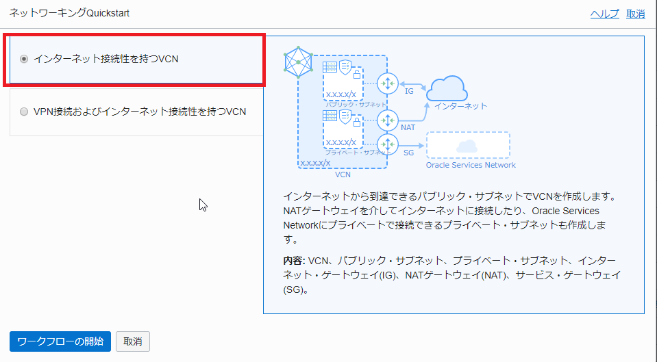
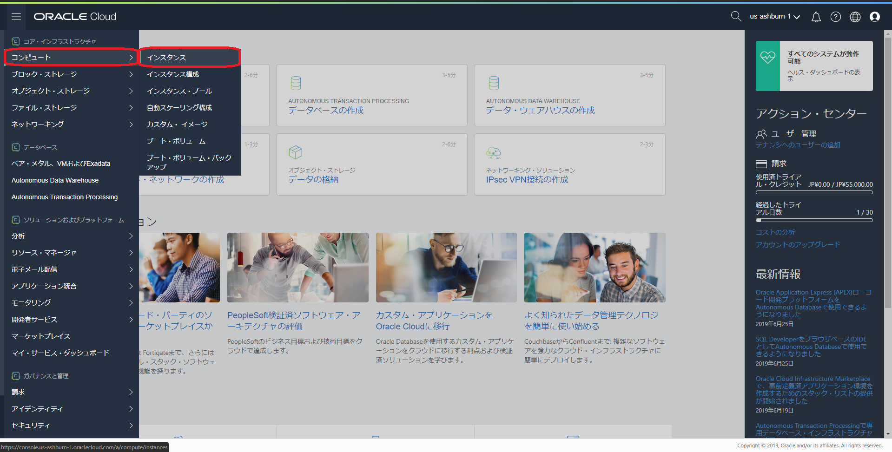
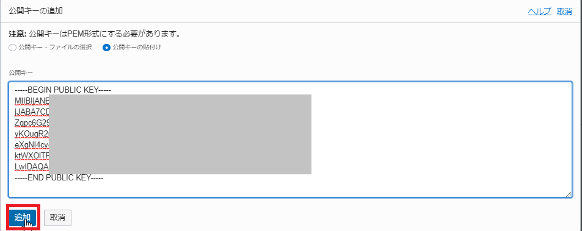
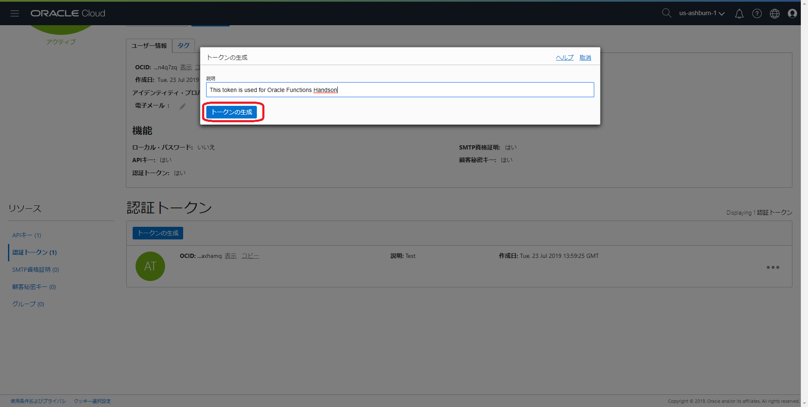
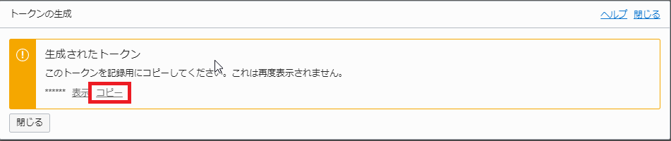

Oracle Functionsことはじめ¶
Oracle Functionsは、Oracleが提供するFn Projectのマネージドサービスです。
このエントリーでは、Oracle Functions環境構築から動作確認までの手順を記します。
条件¶
- クラウド環境
- 有効なOracle Cloudアカウントがあること
全体の流れ¶
手順の大まかな流れは以下のとおりです。
- コンピュートインスタンス・ネットワークの作成
- Fn Project実行環境の構築
- Oracle Functions実行環境の構築
- ファンクションの作成
Fn Projectのハンズオンを既に実施している場合は、1,2の手順をスキップできます。(ただし、事前準備の実施は必要です)
Oracle Functionsの動作のイメージをより理解するためにFn Projectのハンズオンを先に実施されることをお勧めします。
注意事項: コンパートメントについて
Oracle Cloudにはコンパートメントという考え方があります。
コンパートメントは、クラウド・リソース(インスタンス、仮想クラウド・ネットワーク、ブロック・ボリュームなど)を分類整理する論理的な区画で、この単位でアクセス制御を行うことができます。また、OCIコンソール上に表示されるリソースのフィルタとしても機能します。
今回は、ルートコンパートメントと呼ばれるすべてのリソースを保持するコンパートメントを利用するので、特に意識する必要がありません。
注意事項: ポリシーについて
Oracle Cloudでは、各ユーザーから各サービスへのアクセスおよび各サービスから他サービスへアクセスを「ポリシー」を利用して制御します。ポリシーは、各リソースに誰がアクセスできるかを指定することができます。
注意事項: リージョンとリージョンコードについて
Oracle Cloudでは、エンドポイントやレジストリにアクセスする際にリージョンおよびリージョンコードを使用する場合があります。
以下に各リージョンと対応するリージョンコードを記載します。
本ハンズオンでは、OCI CLIのセットアップおよびOCIRのログイン時に使用します。
| リージョン | リージョンコード |
|---|---|
| ap-tokyo-1 | nrt |
| ap-osaka-1 | kix |
| ap-melbourne-1 | mel |
| eu-amsterdam-1 | ams |
| me-jeddah-1 | jed |
| us-ashburn-1 | iad |
| us-phoenix-1 | phx |
| ap-mumbai-1 | bom |
| ap-seoul-1 | icn |
| ap-sydney-1 | syd |
| ca-toronto-1 | yyz |
| eu-frankfurt-1 | fra |
| eu-zurich-1 | zrh |
| sa-saopaulo-1 | gru |
| uk-london-1 | lhr |
事前準備¶
ここでは、Oracle Functionsのハンズオンを実施するためにOCI(Oracle Cloud Infrastructure)に対してポリシーの設定を行います。
Oracle Cloudのダッシューボードにログインし、ダッシューボード画面のハンバーガーメニューで"アイデンティティ"=>"ポリシー"をクリックします。

"ポリシーの作成"をクリックします。
"名前"に任意の名前(特にこだわりがなければ"Oracle-Functions-Policy")を入力、"説明"にも名前と同様の値を入力、"ポリシーのバージョニング"を"ポリシーを最新の状態に維持"を選択、ステートメントに以下に2つを入力し、"作成"をクリックします。
以下の2つのポリシーによって、Oracle FunctionsからのVCN(ネットワーク)の使用およびファンクションを格納するレジストリの使用を許可します。
- Allow service FaaS to use virtual-network-family in tenancy
- Allow service FaaS to read repos in tenancy
以上で、事前準備は完了です。
1 . コンピュートインスタンス・ネットワークの作成¶
まずはじめに、OCI(Oracle Cloud Infrastructure)上でOracle Functionsを実行するための環境構築をしていきます。
1-1. VCN（ネットワーク）の作成¶
Oracle Cloudのダッシューボードにログインし、ダッシューボード画面のハンバーガメニューで"ネットワーキング"=>"仮想クラウド・ネットワーキング"をクリックします。

表示された画面左下の"スコープ"内の"コンパートメント"をクリックし、ルートコンパートメント(下記の場合は"functionshandson")を選択します。ルートコンパートメントはOracle Cloudの登録時に設定した名称になります。既に選択されている場合は、この手順はスキップしてください。

"VCNウィザードの起動"をクリックします。

"インターネット接続性を持つVCN"を選択し、"ワークフローの起動"をクリックします。

以下の情報を入力し、"次"をクリックします。
- VCN名：任意の名前(こだわりがなければ"Oracle Functions Handson")
- コンパートメント：ルートコンパートメント
- VCN CIDRブロック：
10.0.0.0/16 - パブリック・サブネットCIDRブロック：
10.0.0.0/24 - プライベート・サブネットCIDRブロック：
10.0.1.0/24
"作成"をクリックします。
"仮想クラウド・ネットワークの表示"をクリックします。
以上で、VCN(ネットワーク)の作成は終わりです。
1-2. コンピュートインスタンスの作成¶
次に、Oracle Functionsを動作させるために利用するコンピュートインスタンスの作成を行います。
Oracle Cloudのダッシューボードにログインし、ダッシューボード画面のハンバーガーメニューで"コンピュート"=>"インスタンス"をクリックします。

表示された画面左下の"リスト範囲"内の"コンパートメント"をクリックし、ルートコンパートメント(下記の場合は"functionshandson")を選択します。ルートコンパートメントはトライアル環境の登録時に設定した名称になります。既に選択されている場合は、この手順はスキップしてください。

"インスタンスの作成"をクリックします。

"イメージ・ソースの変更"をクリックします。
上部の"Oracleイメージ"タブ=>"Oracle Cloud Developer Image"をクリックします。
画面下部の"Oracle標準条件および制約事項を確認した上でこれに同意します"にチェックを入れ、"イメージの選択"をクリックします。
画面をスクロールし、"ネットワーキングの構成"で1-1で作成したネットワークを選択します。
- 仮想クラウド・ネットワーク・コンパートメント：ルートコンパートメント
- 仮想クラウド・ネットワーク：1-1で作成したネットワーク
- サブネット・コンパートメント：ルートコンパートメント
- サブネット：パブリックサブネット("Oracle Functions Handson"で作成した場合は"パブリック・サブネット-Oracle Functions Handson(リージョナル)")
- "パブリックIPアドレスの割当て"を選択
画面をスクロールし、"SSHキーの追加"で"ファイルの選択"をクリックし、ローカルに配置しているSSHキー(公開鍵)を選択します。
"仮想クラウド・ネットワーク"で1-1で作成したネットワーク名(手順1-1に記載の名前で作成した方は"Oracle Functions Handson")を選択し、"作成"をクリックする。
インスタンスが作成され、"プロビジョニング中"になります。 しばらくするとインスタンスが"実行中"になり、インスタンスにログインできるようになります。
以上で、コンピュートインスタンスの作成は終わりです。
2 . Fn Project実行環境の構築¶
ここでは、上の手順で作成したコンピュートインスタンス上に、Fn Projectを実行するための環境構築を行います。
Fn Projectを起動させるには、以下が必要です。
- 環境
- Docker 17.10 (or higher) がインストール済みの環境
今回は、"Oracle Cloud Developer Image"を使用しているので、既にDockerはインストールされています。
そのため、環境構築はFn Projectを動作させるために必要なFn CLIとFn Serverのインストールのみになります。
Note
Fn Projectの詳しいインストール手順が気になる方は、公式のチュートリアルを参照ください。本ハンズオンはこのチュートリアルを参考に作成されています。
2-1. ログイン¶
1-2で作成した環境にログインします。今回はTera Termを利用してログインします。
ダッシューボード画面のハンバーガーメニューで"コンピュート"の"インスタンス"画面をクリックします。
1-2で作成したコンピュートインスタンスをクリックします。

インスタンス情報の"パブリックIPアドレス"のIPアドレスを確認します。

上記で確認したパブリックIPアドレスをTera Termのホストに入力し、"OK"をクリックします。
"ユーザー名"に"opc"を入力、ローカルに配置しているSSHキー(秘密鍵)を選択し、"OK"をクリックします。
上記手順でログインができます。
2-2. Fn CLIとFn Serverのインストール¶
ログインしたら、opcユーザでdockerを操作できるようにするために以下のコマンドを実行します。
sudo usermod -aG docker opc
上記コマンドを実行したらexitコマンドでコンピュートインスタンスからログアウトし、ログインし直します。
再ログインしたら、以下のコマンドを実行してfnをインストールします。
curl -LSs https://raw.githubusercontent.com/fnproject/cli/master/install | sh
インストールに成功すると以下のように表示されます。(fn versionは同一でなくても問題ありません。)
fn version 0.4.87
______
/ ____/___
/ /_ / __ \
/ __/ / / / /
/_/ /_/ /_/`
fnがインストールされたことを確認するために以下のコマンドを実行します。
fn start
以下のように表示されれば成功です。
time="2019-07-16T09:38:19Z" level=info msg="available memory" cgroup_limit=9223372036854771712 head_room=1447603814 total_memory=14476038144
time="2019-07-16T09:38:19Z" level=info msg="ram reservations" avail_memory=13028434330
time="2019-07-16T09:38:19Z" level=info msg="available cpu" avail_cpu=2000 total_cpu=2000
time="2019-07-16T09:38:19Z" level=info msg="cpu reservations" cpu=2000
______
/ ____/___
/ /_ / __ \
/ __/ / / / /
/_/ /_/ /_/
v0.3.721
time="2019-07-16T09:38:19Z" level=info msg="Fn serving on `:8080`" type=full version=0.3.721
上記が確認出来たら、Ctrl + CでFn Serverを停止させてください。
以上で、Fn Project実行環境の構築は終わりです。
3 . Oracle Functions実行環境の構築¶
ここでは、Oracle Functionsを動作させるための環境を構築します。
3-1. OCI CLI初期設定¶
まずは、OCI CLIの初期設定を行います。
3-1-1. OCID/tenancy OCID/tenancy-namespaceの確認¶
OCI CLIの初期設定に必要ないくつかの情報を確認します。
-
OCID
画面右上の人型のアイコンをクリックします。
さらに、展開されたメニューのユーザー名部分(下記の場合は"oracleidentitycloudservice/takuya2230@gmail.com")をクリックします。
 ユーザーの詳細情報の画面で"ユーザー情報"タブ内にユーザーのOCIDが表示されている箇所があります。
ユーザーの詳細情報の画面で"ユーザー情報"タブ内にユーザーのOCIDが表示されている箇所があります。
OCIDの値の右にある"コピー"をクリックすると、クリップボードにOCIDがコピーされるので、これを手元のテキストエディタなどにペーストしておきます。 -
tenancy OCID
次に、同じく画面右上の人型のアイコンをクリックし、展開されたメニューにあるテナント名(下記の場合は"functionshandson")をクリックします。
 テナンシ詳細情報の画面で"テナンシ情報"タブ内にOCIDが表示されている箇所があります。
テナンシ詳細情報の画面で"テナンシ情報"タブ内にOCIDが表示されている箇所があります。
OCIDの値の右にある"コピー"をクリックすると、クリップボードにOCIDがコピーされるので、これを手元のテキストエディタなどにペーストしておきます。 -
tenancy-namespace
上記と同じテナンシ詳細情報の画面で"テナンシ情報"タブ内にオブジェクト・ストレージ・ネームスペースが表示されている箇所があります。
下図の赤枠の部分を選択、コピーし、これを手元のテキストエディタなどにペーストしておきます。
3-1-2. OCI CLIのセットアップ¶
rootユーザーであることを確認し、以下のコマンドを実行します。
oci setup config
いくつかの質問がされますので、下表のように設定してください。
| 質問 | 応答操作 |
|---|---|
| Enter a location for your config [/root/.oci/config] | なにも入力せず[Return] |
| Enter a user OCID | 3-1-1の手順で確認したユーザーのOCIDを入力 |
| Enter a tenancy OCID | 3-1-1の手順で確認したテナントのOCIDを入力 |
| Enter a region (e.g. ap-tokyo-1, ca-toronto-1, eu-frankfurt-1, uk-london-1, us-ashburn-1, us-gov-ashburn-1, us-gov-chicago-1, us-gov-phoenix-1, us-langley-1, us-luke-1, us-phoenix-1) | 自身のトライアル環境に対応したリージョンを入力。本ハンズオンではashburnを使用するので、"us-ashburn-1"を入力。 |
| Do you want to generate a new RSA key pair? (If you decline you will be asked to supply the path to an existing key.) [Y/n] | Y + [Return] |
| Enter a directory for your keys to be created [/root/.oci] | なにも入力せず[Return] |
| Enter a name for your key [oci_api_key] | なにも入力せず[Return] |
| Enter a passphrase for your private key (empty for no passphrase) | なにも入力せず[Return] |
CLIからOCIに対してアクセスを行う際には、OCIのAPIの認証が行われます。
このため予め認証をパスするのに必要なAPIキーを、ユーザー毎にOCIにアップロードしておく必要があります。
OCI CLIの初期セットアップの際に作成した鍵ペアのうち、公開鍵の方を、管理コンソールからアップロードします。
以下のターミナルで以下のコマンドを実行し、公開鍵を表示しておきます。
cat /root/.oci/oci_api_key_public.pem
OCIのコンソールに移り、画面右上の人型のマークが表示されている箇所をクリックします。
さらに、展開されたメニューのユーザー名部分(下記の場合は"oracleidentitycloudservice/takuya2230@gmail.com")をクリックします。
ユーザーの詳細画面の左側のメニューで、"APIキー"をクリックし、さらに"公開キーの追加"ボタンをクリックします。
"公開キーの貼付け"のオプションボタンをクリックします。
"公開キー"ダイアログの入力欄に、先ほどターミナルに表示した公開鍵をペーストし、"追加"ボタンをクリックします。
（"-----BEGIN PUBLIC KEY-----"と"-----END PUBLIC KEY-----"の行も含めてペーストします）

3-2. Oracle Functions CLI contextの作成と設定¶
Oracle FunctionsをデプロイするためのにOracle Functions CLIを利用して環境を作成します。
3-2-1. compartment OCIDの確認¶
画面左のハンバーガーメニューをクリックし、"アイデンティティ"=>"コンパートメント"をクリックします。
表示されたコンパートメント一覧から、ルートコンパートメント(下記の場合は"functionshandson")をクリックします。
コンパートメントの詳細情報の画面で"コンパートメント情報"タブ内にユーザーのOCIDが表示されている箇所があります。
OCIDの値の右にある"コピー"をクリックすると、クリップボードにOCIDがコピーされるので、これを手元のテキストエディタなどにペーストしておきます。
3-2-2. 認証tokenの作成¶
ここでは、OCIR(Oracle Functionsを管理するOracle提供のプライベートDockerレジストリ)にログインするための認証tokenを作成します。
OCIのコンソールに移り、画面右上の人型のマークが表示されている箇所をクリックします。
さらに、展開されたメニューのユーザー名部分(下記の場合は"oracleidentitycloudservice/takuya2230@gmail.com")をクリックします。
ユーザーの詳細画面の左側のメニューで、"認証トークン"をクリックし、さらに"トークンの生成"をクリックします。
"説明"に"This token is used for Oracle Functions Handson"と入力し、"トークンの生成"をクリックします。 
以下の画面が表示されるので、"コピー"をクリックし、これを手元のテキストエディタなどにペーストしておきます。 
3-2-3. Oracle Functions開発環境の作成¶
ここでは、FN CLIを利用してOracle Functions開発環境の作成を行います。
3-2-3-1 開発環境の作成¶
まずは、 fn createコマンドを使用してcontext(開発環境)を作成します。
fn create context [my-context] --provider oracle
[my-context]には、context名を任意に指定します。
"--provider oracle"をオプションに指定することで、Oracle Function用の環境を作成できます。
今回は、"functions-handson"という名前で作成します。 以下のコマンドを実行します。
fn create context "functions-handson" --provider oracle
3-2-3-2 開発環境の切り替え¶
fn useコマンドを使用して、作成した環境に切り替えます。
fn use context [my-context]
今回は、"functions-handson"という名前で作成したので、以下のコマンドを実行します。
fn use context "functions-handson"
3-2-3-2 開発環境の設定¶
開発環境にコンパートメントID、APIエンドポイント、OCIR(Oracleが提供するプライベートDockerレジストリであり、Oracle Functionsの管理を行うサービス)の設定を行います。
開発環境の設定は、fn updateコマンドを使用して行います。
以下のコマンドを実行し、コンパートメントIDを設定します。([compartment-ocid]は3-2-1の手順で確認したcompartment OCIDです。)
fn update context oracle.compartment-id [compartment-ocid]
以下のコマンドを実行し、Oracle Functionsを呼び出す際のAPIエンドポイントを設定します。(本ハンズオンではashburnのAPIエンドポイントを使用)
APIエンドポイントにおけるリージョン(下記であれば"us-ashburn-1"部分)自身のトライアル環境に対応した値を使用してください。
fn update context api-url https://functions.us-ashburn-1.oraclecloud.com
以下のコマンドを実行し、OCIRを設定します。
fn update context registry [region-code].ocir.io/[tenancy-namespace]/[repo-name]
今回は以下のコマンドを実行し、OCIRを設定します。(本ハンズオンではashburnリージョンを使用)
[region-code] (下記であれば"iad"部分)については、自身のトライアル環境に対応した値を使用してください。
[tenancy-namespace]は、3-1-1で確認したtenancy-namespaceを設定します。
fn update context registry iad.ocir.io/[tenancy-namespace]/functions-handson
以下のコマンドを実行し、Oracle Functionsで使用するprofile名を設定します。
profile名は、今回"DEFAULT"(OCI CLIセットアップ時に設定されるデフォルトのprofile名)を入力します。
fn update context oracle.profile "DEFAULT"
以下のコマンドを実行し、OCIRにログインできることを確認します。(本ハンズオンでは、ashburnを使用しているので、"iad")
ログインの際にユーザー名とパスワードを聞かれるので、下表のように応答します。
OCIRのURIにおけるリージョンコード(下記であれば"iad"部分)については、自身のトライアル環境に対応した値を使用してください。
docker login iad.ocir.io
| 質問 | 応答操作 | 備考 |
|---|---|---|
| Username | [tenancy-namespace]/[username] | [tenancy-namespace]:3-1-1で確認したtenancy-namespace [username]: OCIコンソール画面右上の人型のアイコンをクリックし、展開されたメニューにある"プロファイル"直下に表示される文字列 |
| Password | 3-2-2で作成した認証token | tokenは半角英数字記号 |
ログインに成功すると以下のように表示されます。
Login Succeeded
以上で、Oracle Functions開発環境の作成は完了です。
3-2-4. Oracle Functionsのアプリケーション作成¶
ここでは、Oracle Functionsのアプリケーションの作成を行います。
OCIのコンソールに移り、"開発者サービス"の"ファンクション"をクリックします。
"アプリケーションの作成"をクリックします。
名前に"helloworld-app"と入力、VCNに手順1-1で作成したネットワーク名(手順1-1に記載の名前で作成した方は"Oracle Functions Handson")を選択、サブネットにVCNに紐づくパブリックサブネット("Oracle Functions Handson"で作成した場合は"パブリック・サブネット-Oracle Functions Handson(リージョナル)")を選択し、"作成"をクリックします。
以上で、Oracle Functions実行環境の構築は完了です。
4 . ファンクションの作成¶
ここでは、ファンクションの作成と動作確認を行います。
4-1. ファンクションプロジェクトの作成¶
まず、ファンクションプロジェクトを作成します。
作成するアプリケーションの言語は以下から選択することができます。
- サポートする言語
- Go
- Java
- Node.js
- Python
- Ruby
今回は、Javaでアプリケーションを作成します。
まずは、fn initコマンドを使用してファンクションのひな形を作成します。
- fn initコマンド
- --runtime:使用する言語を指定します。今回はjavaを指定します。
- --trigger:HTTPのエンドポイントを追加するためのオプション
以下のコマンドを実行し、ファンクションプロジェクトを作成します。
fn init --runtime java helloworld-func
4-2. ファンクションのデプロイ¶
4-1で作成したファンクションのデプロイを行います。
以下のコマンドを実行し、ファンクションプロジェクトに移動します。
cd helloworld-func
以下のコマンドを実行し、ファンクションをデプロイします。
--appでアプリケーション名を指定します。
指定するアプリケーションは、3-2-4で作成したアプリケーション名です。
fn deploy --app helloworld-app
ファンクションがデプロイされていることを確認します。
OCIのコンソールに移り、"開発者サービス"の"レジストリ(OCIR)"をクリックします。
OCIRのレジストリに先ほどデプロイしたファンクションがアップロードされていることを確認します。レジストリ上のファンクションは、[context名]/[Oracle Functionsプロジェクト名]になっています。
このハンズオンでは、"functions-handson/helloworld-func"になります。
次にOracle Functionsアプリケーションにhelloworld-funcがデプロイされていることを確認します。 OCIのコンソールに移り、"開発者サービス"の"ファンクション"をクリックします。
"helloworld-app"をクリックします。
"機能"に"helloworld-func"が表示されていればデプロイ成功です。
4-3. Oracle Functionsの実行¶
Oracle Functionsを実行します。
以下のコマンドを実行し、ファンクションが実行されることを確認します。
引数は[Oracle Functionsアプリケーション名] [ファンクション名]の順に指定します。
fn invoke helloworld-app helloworld-func
以下のように表示されれば成功です。
Hello, World!